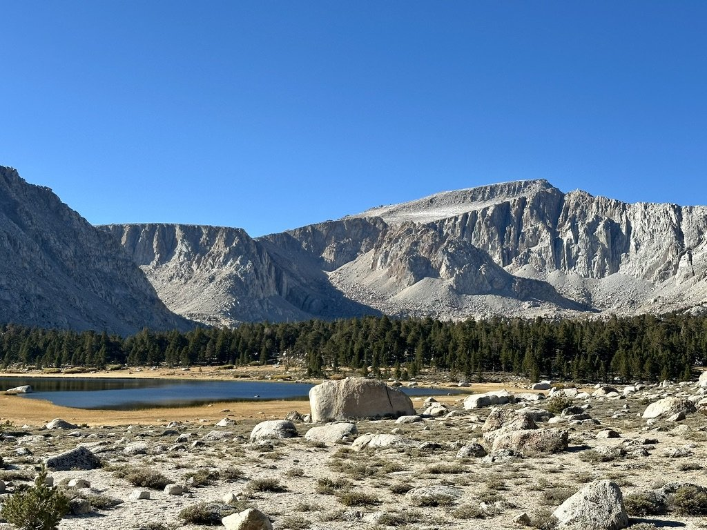
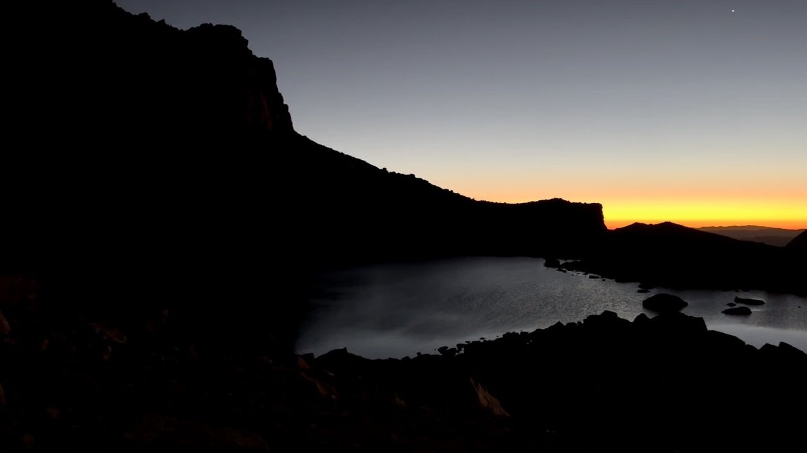
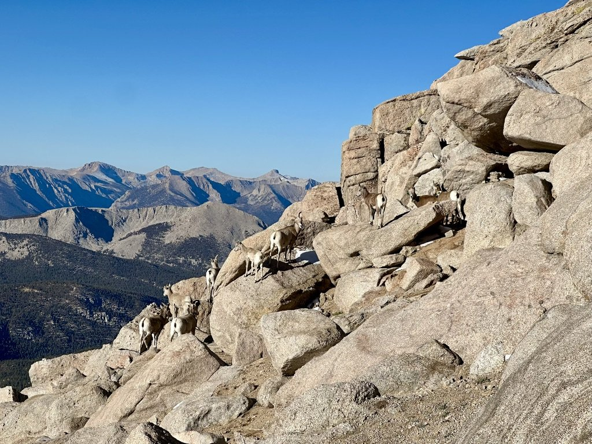
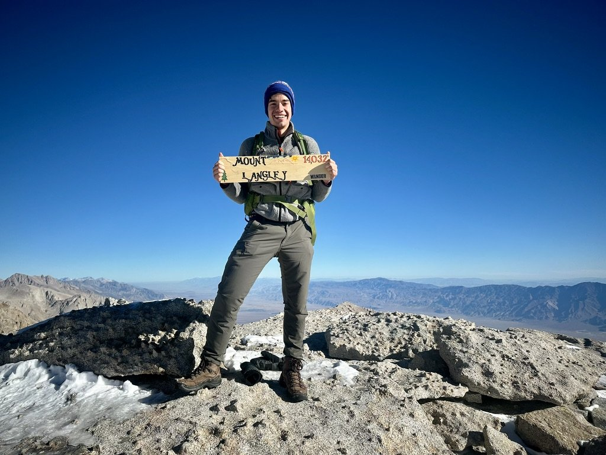
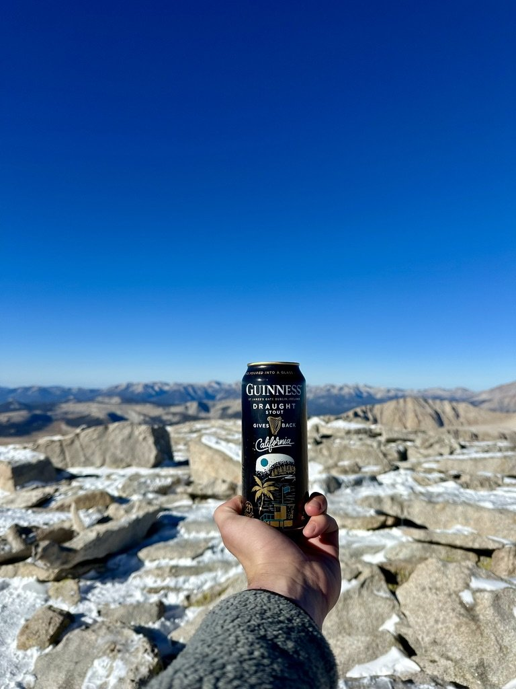
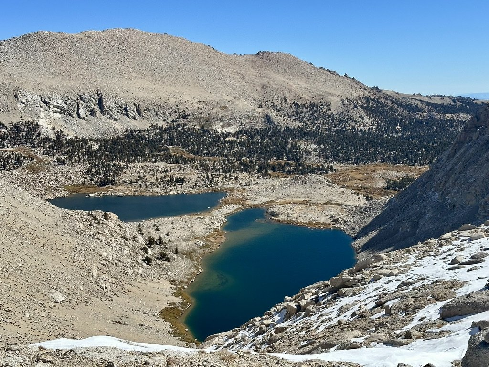

After a summer of Colorado peak-bagging with my sister (mostly on three-day weekends between thesis research at Stanford), I began my junior year with my alpinism itch still not completely scratched. To that end, two friends and I planned to spend the first weekend of October driving the seven hours to Mt. Langley near Lone Pine, climbing the mountain over two days, and driving back. As my dad pointed out, this would be a road trip with a side of hiking.
Unfortunately a nasty respiratory bug sidelined one amigo, so at four o’clock that Saturday morning I set out with the other to conquer what would be our first California fourteener. First we conquered the drive there, during which I learned my friend is significantly better (and more motivated) than I at Overleaf proofwriting in a moving vehicle.
We stocked up on candy and Subway sandwiches in Lone Pine before the winding drive to the trailhead. As is custom with my mountain adventures, we were running hours behind and hit the trails quickly. Laden with inefficiently packed and poorly sized packs, we made quick work of 6.43 miles and 1.3k feet of vert, leaving us at Long Lake, which lies along the longer, more gradual New Army Pass climb. We set up camp, enjoyed our smushed sandwiches by the lake (photo 1), filtered some water, and hit the hay before sunset.
Our alarms blared at five o’clock the following morning, drawing us from the warmth of our sleeping bags back onto the trail. Headlamps on, we powered up the remainder of New Army Pass in the twilight (photo 2) and reached the ridge as the sky became blue. Unlike many of the Colorado fourteeners I’d hiked the previous summer, Langley’s “ridge” is quite easy but also quite long. We continued for more than an hour through a mars-esque landscape, only reminded that we were in California by the occasional trail runner blasting house music.
Shortly before nine, we reached the final climb, which we completed surrounded by a large group of goats (photo 3). Reaching the summit meant ludicrous winds, so we quickly knocked out the three summit essentials — (1) photo with the sign, (2) photo of the surrounding mountains, and (3) photo of summit beer (photos 4 and 5). Very satisfied, we scurried down from the summit via a slightly-more-eastern class two route, high-tailed it back to Long Lake (photo 6), packed our tents, and hustled back to the car. We’d killed 16.95 miles and 3.7k feet of vert in 7 hours and were on the road at two pm.
I was already quite happy we’d pulled everything off without a hitch, but my friend’s joy was cemented when we found the wallet he thought he’d lost under the car. Between two gas stations, one Chipotle, and seven hours of country music, we were back at Stanford before we knew it.
1





